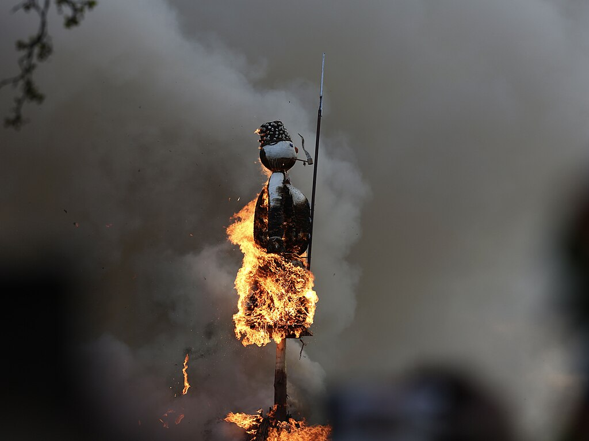
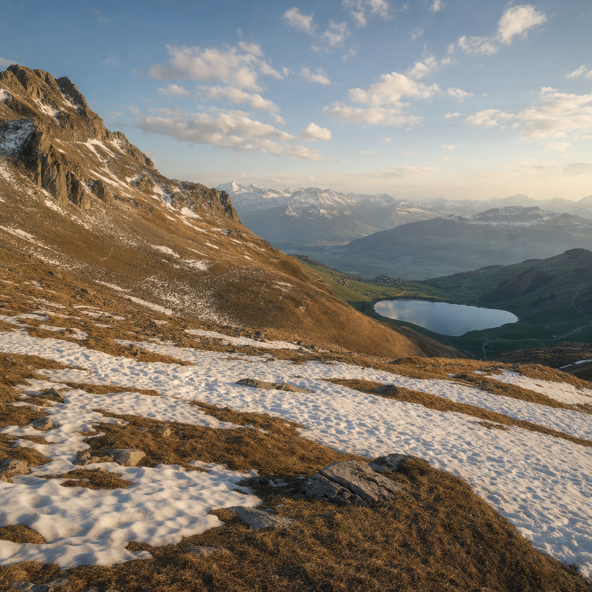

The snowman is wrong (and Switzerland is hotter)
For 500 years Zurich has lit a giant cotton-wool snowman on fire to forecast the summer. We finally have the receipts: 67 years of burn times against the Swiss Plateau weather they were supposed to predict. The folk rule is exactly backwards. The climate signal is loud.
The snowman gets a microphone
On 19 April 2023, a 3.4-metre cotton-wool snowman stood on top of a 10-metre wood pyre in Zurich, was lit at 6 p.m. on the dot, and proceeded to take 57 minutes to explode. Slow burn = bad summer. That summer's mean temperature on the Swiss Plateau was 20.07 °C — one of the hottest on record.
The snowman is called the Böögg. The festival is Sechseläuten, traceable to a Zurich council vote in 1525 and combined with the official burn since 1902. The folk rule has been the same for centuries: the faster the head explodes, the warmer the summer.
The 2023 result wasn't a one-off bad day. In 2022 the Böögg burned for 38 minutes and the summer was the second-hottest on record. In 2025 it burned for 26.5 minutes and the summer cleared the 19 °C "record" line again. Out of the eight years that Swiss meteorologists single out as the obvious hits and misses, the snowman is right exactly once.
The folk rule, in one chart
The folk rule is a clean, falsifiable claim: faster burn should predict hotter summer. The dataset offers 65 paired observations from 1923 to 2025. The Pearson correlation between burn duration and summer mean temperature is r = 0.194, with p = 0.121 — not statistically significant, and pointing the wrong way. Slower burns are associated, very weakly, with hotter summers.
Switching to rank-based Spearman correlation — which protects against the 4-minute and 60-minute outliers — moves the headline number to ρ = 0.173 (p = 0.168). Sunshine correlations collapse to essentially zero (ρ = 0.005). Whatever you measure, the snowman has nothing to say about it.
On the scatter chart, the cloud of points has no shape. Short burns appear in cool years and hot years; long burns appear in cool years and hot years. The folk forecast collides with the data exactly the way MeteoSwiss said it would: a poor forecaster, dressed up in 500 years of tradition.
How wrong, exactly
Split the 65 burns at the median (13 minutes). The 32 fast-burn years average 17.49 °C summers. The 33 slow-burn years average 17.64 °C — a difference of −0.148 °C, in the wrong direction, with t = −0.45 and p = 0.66. By the rule's own logic, only 2 of 32 fast burns (6.3 %) were actually followed by a record summer; 8 of 33 slow burns (24.2 %) were.
Slow burns predict record summers four times more often than fast ones.
As a binary forecast — "fast burn means record summer" — the folk rule reaches 41.5 % agreement with reality across 65 years. The base rate of just always saying not a record summer hits 84.6 %. The snowman is performing about half as well as silence.
6.3 % of fast burns were followed by a record summer.
24.2 % of slow burns were followed by a record summer.
Folk-rule accuracy: 41.5 %. Always saying "not a record": 84.6 %.
The snowman is performing about half as well as silence.
But the burns themselves keep getting weirder
Across the recorded burns, the median is 13 minutes and the mean is 17.6, with a long right tail that reaches 60 minutes (1923) and 57 minutes (2023). Most of the burns finish quickly — 25 % under 10 minutes — and the long ones are the storytellers.
Dig into the decades and the duration series doesn't trend monotonically — it spikes. The 1950s and 60s averaged 6 to 11 minutes; the 1970s and 80s drifted up to 17–21; the 1990s and 2000s came back down to roughly 10–15; and the 2020s have so far averaged 33.6 minutes per burn. That's more than five times the 1950s. MeteoSwiss attributes the wild swings to entirely earthly things: pyre construction, firewood humidity, weather on the festival day, and the amount of accelerant the guild uses. None of this carries information about June.

And the summers really are getting hotter
Now look at what the snowman cannot see. Linear regression of summer mean temperature on year, across the same 67 rows, gives a slope of +0.0415 °C per year, r = 0.675, p = 3.8 × 10⁻¹⁰. The implied 100-year warming is 4.15 °C. The first 30 observed years averaged 16.67 °C; the last 30 averaged 18.53 °C. A 1.86 °C gap, in lived memory.
Cut the same series by decade. The 1920s through the 1970s contain zero summers above the 19 °C "record" line. The 1980s, 90s, and 2000s have one each. The 2010s have four out of nine. The 2020s already have four out of six — 66.7 %. What was a generational event in the snowman's first half-century is now the most likely outcome of any given July.
The ten record summers in the dataset that could be paired with a burn time sit across the entire duration spectrum: from 5.7 minutes (2003) to 57 minutes (2023). The Böögg has been to all of them. It just hasn't seen any.

What we keep watching
In 2020 the festival was cancelled by COVID. In 2024, for the first time ever in the modern era, the burn itself was called off because the wind was too high — gusts of 60–80 km/h across the canton. Both years the snowman was silent and both years still happened: 2024 cleared 19 °C and joined the record column anyway.
The forecast doesn't work. The ritual still does. Tens of thousands of people stand on Sechseläutenplatz every spring to watch a giant cotton-wool snowman take whatever time it takes to detonate. The dataset is a record of what we wanted the weather to be, sitting on top of what it actually became.
References
- Data source: philshem / Sechselaeuten-data (burn durations) joined with MeteoSwiss Swiss-Plateau summer climate aggregates. Curated for TidyTuesday 2025-12-02 by @econmaett.
- MeteoSwiss verdict: Böögg prediction (Federal Office of Meteorology and Climatology).
- Festival background: Sechseläuten — Wikipedia; Who or What is the Böögg? — zuerich.com.
- Recent reporting: SWI swissinfo — The Böögg, Switzerland's exploding psychic snowman.
- Tools: Vega-Lite v5; analyses in Python (pandas, scipy.stats). Reference photo CC BY-SA 4.0 (Paradise Chronicle / Wikimedia Commons). Embedded video clips by Geoff Pegler / NewInZurich and DW Euromaxx, used via standard YouTube embed.